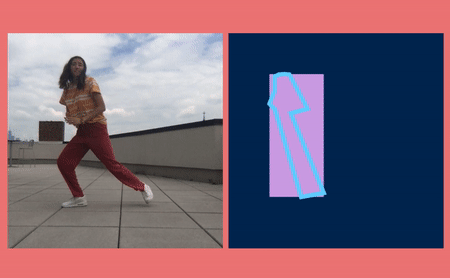
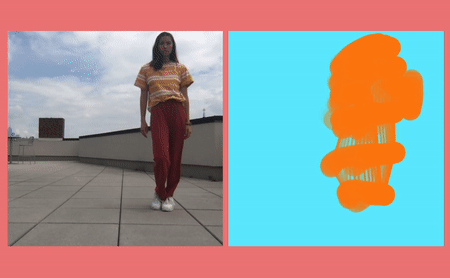
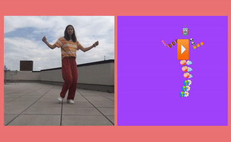

PoseNet Sketchbook
googlecreativelab.github.io/posenet-sketchbook/
Designed, developed, and open sourced this collection of web experiments created to allude to the artistic possibilities of using PoseNet (running on tensorflow.js) to create a relationship between movement and machine.
Try them out on the live site here and get the open source code on the Google Creative Lab's github here.


